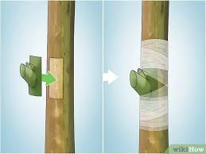
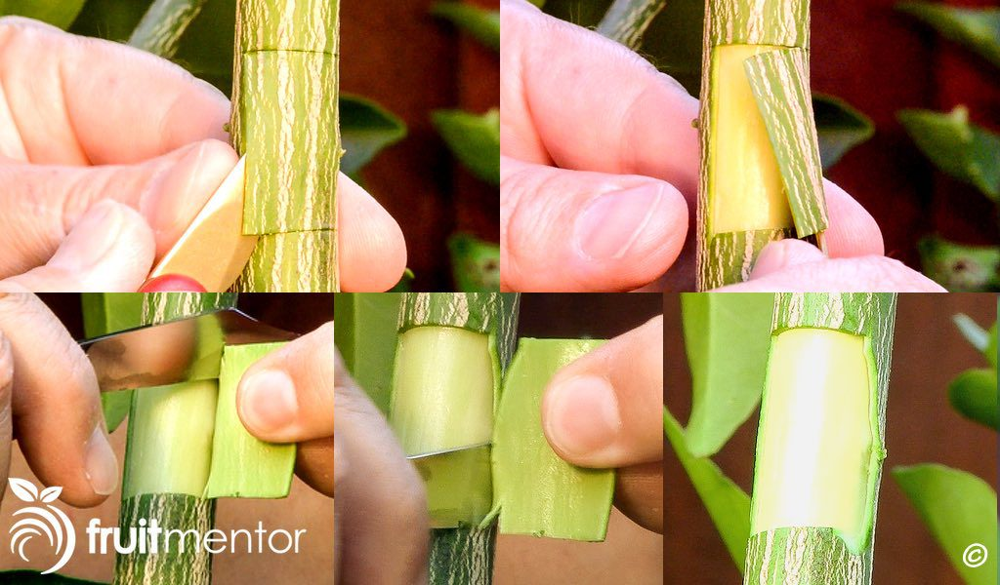

Videos
T-budding
T-budding involves inserting a bud from one plant into the bark of another, allowing it to grow.
- Select a healthy bud from the donor plant.
- Make a T-shaped incision in the bark of the receiving plant.
- Insert the bud into the slit.
- Wrap the graft union with grafting tape to secure it.

Chip budding
Chip budding involves inserting a small piece of bark containing a bud from one plant into the bark of another.
- Prepare a small chip of bark with a bud from the donor plant.
- Make a T-shaped incision in the bark of the receiving plant.
- Insert the chip with the bud into the slit.
- Wrap the graft union with grafting tape to secure it.

Patch budding
Patch budding involves attaching a small patch of bark containing a bud from one plant onto the bark of another.
- Prepare a small patch of bark with a bud from the donor plant.
- Make a vertical incision in the bark of the receiving plant.
- Insert the patch with the bud into the slit.
- Wrap the graft union with grafting tape to secure it.
